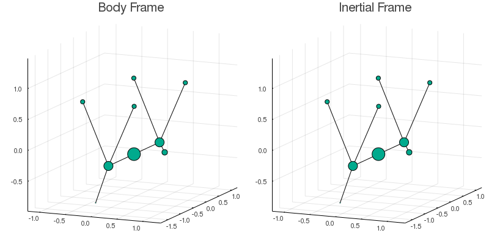

Deformable Bodies Dynamics
DeformableBodies.jl is a Julia package dedicated to the study and solution of a special class of problems from classical mechanics: deformable bodies.
The data needed for solving a deformable body problem consists of the body trajectory with respect to an arbitrary reference frame. Given this, we can reconstruct the body's trajectory from the point of view of an inertial frame as a sequence of rotations from one frame to the other. In order to avoid gimbal lock, all the rotations in this package are represented using unit quaternions.
Example
The figure below represents the movement that a falling cat[disclaimer] does when righting itself midair both from the perspective of a frame rotating together with the cat and from an inertial frame.

Installation
This package can be installed using the Julia Package Manager. Simply open the REPL and run
import Pkg
Pkg.add("https://github.com/iagoleal/DeformableBodies.jl.git")Science behind the camera
This package is based on a scientific initiation that I did with Prof. Alejandro Cabrera while a undergraduate at UFRJ. Everything in here is based on Alejandro's paper
- Cabrera, Alejandro. “Base-Controlled Mechanical Systems and Geometric Phases.” Journal of Geometry and Physics 58.3 (2008): 334–367. Crossref. Web.
Furthermore, this package strongly builds upon the fantastic work done by DifferentialEquations.jl and Plots.jl. Make sure to also check these projects.
- disclaimerNo real cats were harmed during the development of this program.